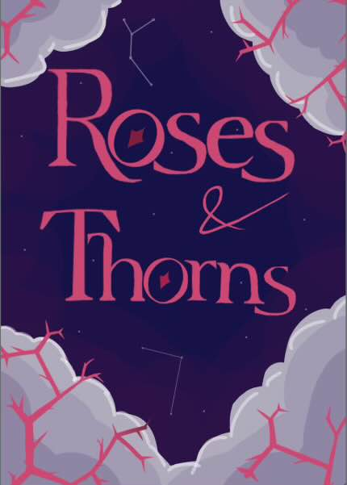

Roses and Thorns” – A story of war and love against all odds.
Buy Now The world is, and has always been normal. It has been unchangeably normal for an unthinkable amount of time.
Normality, however, is fragile. One bad day is all it takes and one bad day is all it took.
Ten years on from M-Day, Daniel Thorn is left to pick up the pieces. He is recruited for a mission that might help save modern civilization and bring about a new era of peace.
Unfortunately, on an island of savage beasts and unforgiving monsters, Dan discovers things that unravel his allegiances and peace may not be an option.
If you want to support us, just click the link to our JustGiving page below!
Donate now!